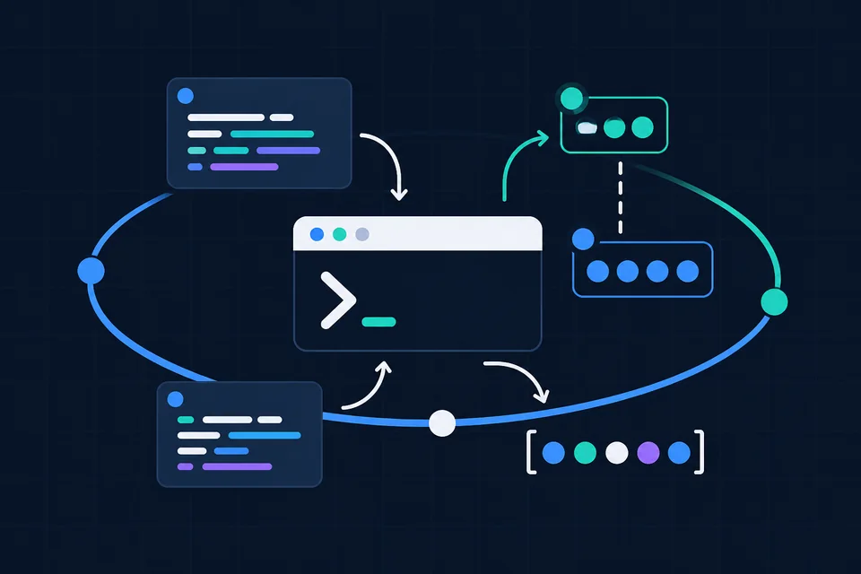
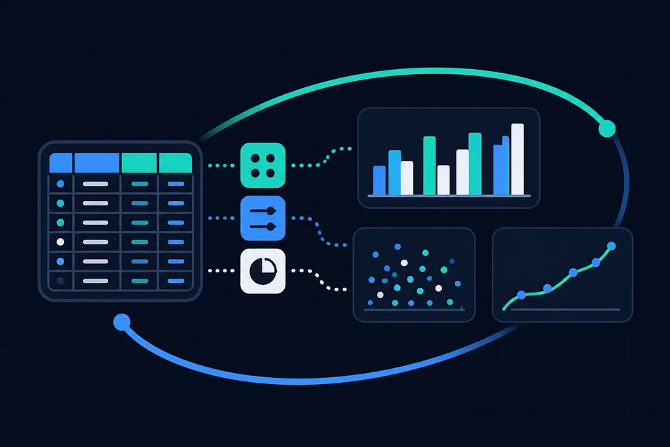
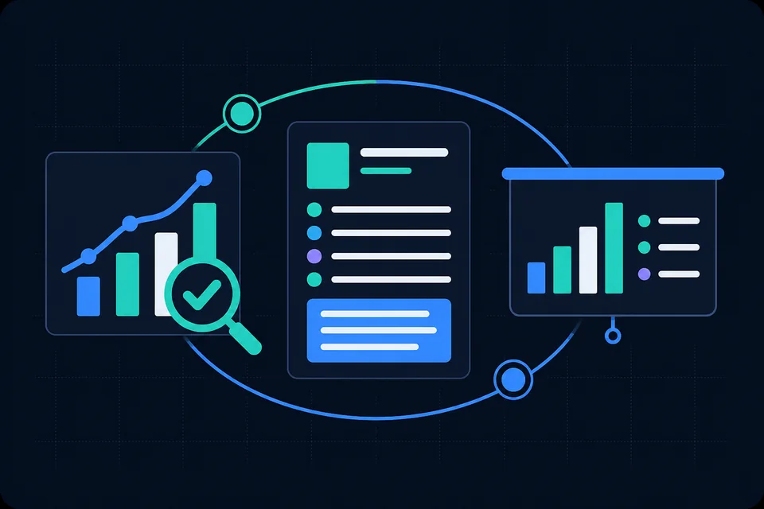

01 · Construir
Programar
Dar instrucciones claras a R y comprender qué hace cada parte del código.
Materiales de estudio semana a semana: guía, laboratorio, R Playground y cheat sheet, en un solo archivo por sesión. ESEN, Ciclo III/2026. Catedrático: Alvin Javier Portillo Tiliano.
El curso conecta tres capacidades: construir, encontrar evidencia y explicar por qué el resultado tiene sentido.

Dar instrucciones claras a R y comprender qué hace cada parte del código.

Preparar los datos, descubrir patrones y comprobar que la transformación es válida.

Interpretar el resultado y defender cómo sabemos que la conclusión es razonable.
Cada tarjeta abre el material completo de esa semana. Las semanas sin material aún muestran "Próxima".
¿Qué puedo hacer con R y cómo le doy instrucciones?
¿Cómo representa R los datos con los que trabaja un economista?
¿Qué puedo descubrir de mis datos antes de calcular?
Tengo una base. ¿Cómo obtengo la información que necesito?
¿Cómo convierto miles de observaciones en información útil?
Integrador de las semanas 1 a 5. Sin material de laboratorio.
¿Qué hago cuando la estructura de una base dificulta el análisis?
¿Qué ocurre cuando la información está repartida entre bases?
¿Cómo dejo de repetir manualmente lo mismo?
¿Cómo paso de tener una base a entender qué ocurre en ella?
Si una IA puede escribir código, ¿qué necesito saber yo?
IA requeridaIntegrador de todo el curso. Sin material de laboratorio.